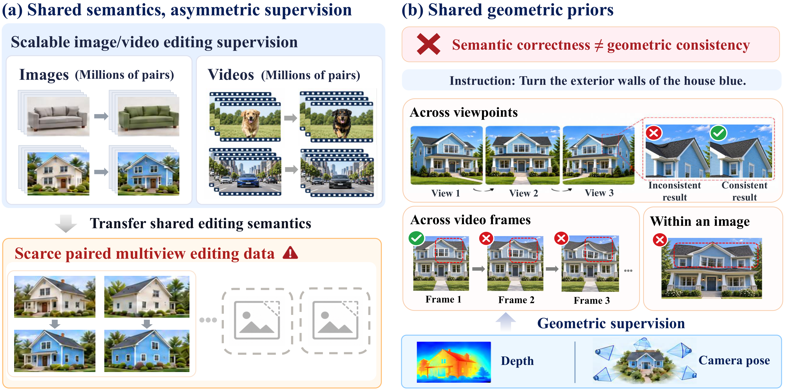
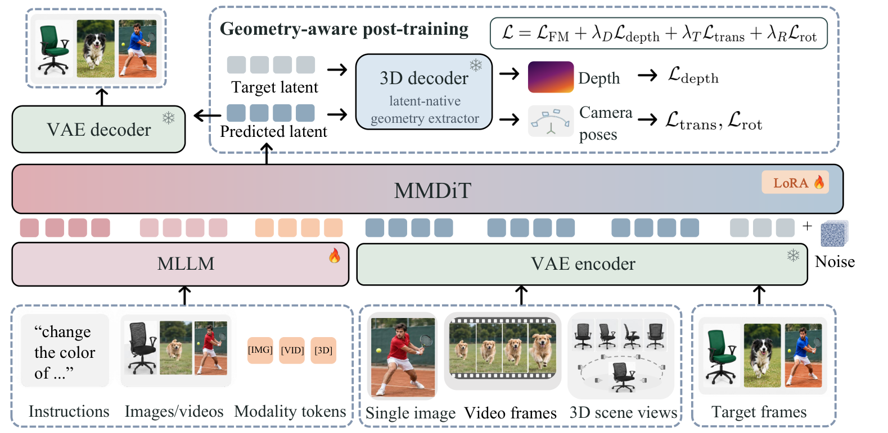

Unified representation
Static frames, temporal frames, and multiview observations share a sequence-processing pipeline.
1 National University of Singapore 2 University of Oxford
* Corresponding authors
“Make the camera a wooden toy.”
“Change the car to a jeep.”
“Make the bonsai snowy.”


Static frames, temporal frames, and multiview observations share a sequence-processing pipeline.
Image and video data transfer editing semantics; 3D supervision improves multiview consistency.
A frozen teacher provides depth and camera-pose signals to preserve structural consistency.
Recent advances in unified visual editing have begun to consolidate image and video editing within a single model, while 3D scene editing remains largely separate and constrained by scarce paired training data. Given the rich image and video editing supervision now available and the common editing semantics shared across modalities, a natural question is whether this knowledge can be transferred to data-scarce 3D editing. We present VitronEdit, a universal framework for image, video, and 3D scene editing. VitronEdit adopts a shared sequence representation and progressive multimodal training to transfer editing knowledge across modalities. We further introduce geometry-aware post-training, which leverages a pretrained geometry reconstruction model to provide depth and camera-pose supervision. Surprisingly, applying geometric supervision only to 3D samples yields the best overall performance, while image and video editing also improve despite receiving no direct geometric supervision, suggesting that geometric regularization transfers through the shared backbone. Our analysis further shows that image and video training mainly transfers editing semantics to 3D, whereas 3D supervision primarily improves multiview consistency.
@misc{wang2026vitronedit,
title = {VitronEdit: Universal Visual Editing across Images, Videos, and 3D Scenes},
author = {Wang, Jing and Li, Yanlin and Lee, Mong-Li and Hsu, Wynne and Wu, Shengqiong and Fei, Hao},
year = {2026}
}